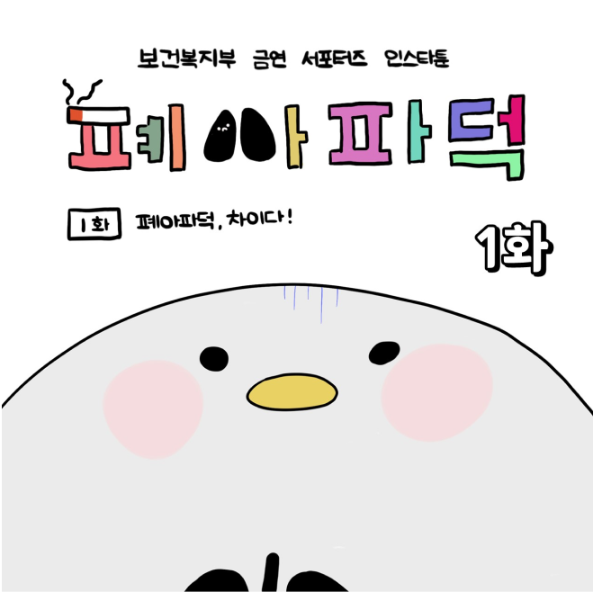

甘い伝統, 伝統の甘。
日本の20代の観光客にソウルで体験できる伝統の味を昼と夜に分けてキュレーティング。ソウルで自分だけの甘い地図を完成させてみよう

日が暮れるまでソウルで甘さを見つけることができる場所としては断然カフェが一番だろう。
そこで昼の甘さは伝統デザートが味わえるところとして提案してみた。
時には韓屋と、時には自然と、時にはモダン(現代)と一緒に伝統の甘さを存分に味わってみよう。
そこで昼の甘さは伝統デザートが味わえるところとして提案してみた。
時には韓屋と、時には自然と、時にはモダン(現代)と一緒に伝統の甘さを存分に味わってみよう。

昼の甘さめぐり


- 